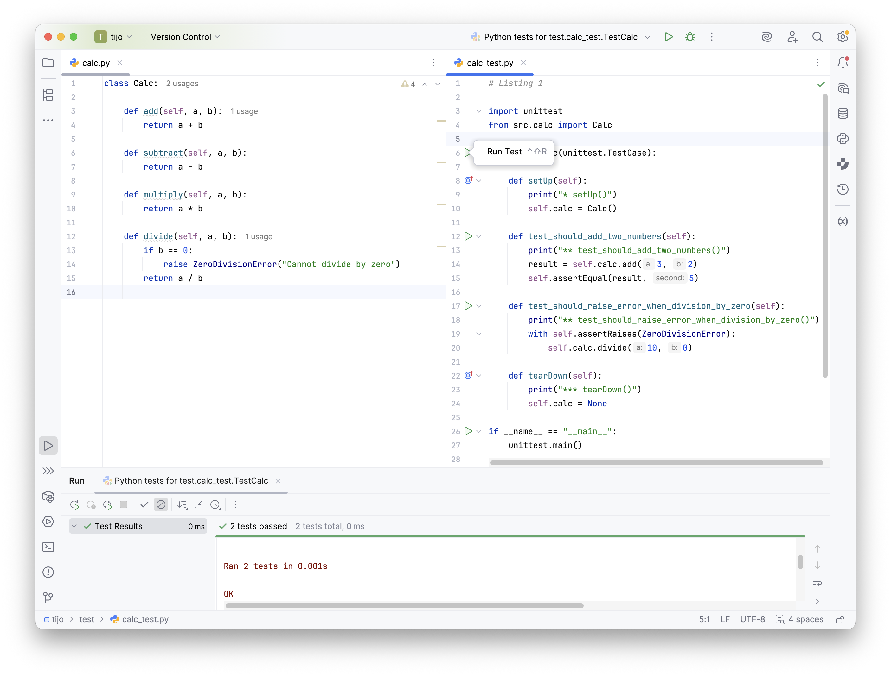

L#02: Framework unittest.
Testowanie jednostkowe to fundament tworzenia niezawodnego oprogramowania. Framework unittest jest standardowym narzędziem do testów jednostkowych w ekosystemie Pythona. Dostarcza on silnik do uruchamiania testów oraz bogaty zestaw asercji. Pozwala na separację logiki testowej od produkcyjnej oraz automatyzację procesu weryfikacji zmian w kodzie.
Celem laboratorium jest zapoznanie się z architekturą testów w frameworku unittest.
Skupimy się na izolacji przypadków testowych poprzez metody cyklu życia (setUp,
tearDown),
weryfikacji sytuacji wyjątkowych oraz stosowaniu spójnych konwencji nazewniczych. Na przykładzie klasy
koszyka zakupowego przećwiczymy projektowanie testów dla złożonej logiki biznesowej.
Spójrz na podstawową strukturę testu przy użyciu tego frameworka. Postaraj się przeanalizować kod, a następnie dokończyć implementacje testów (nie zapominając o konwencji AAA) oraz klasy Calc.
# Listing 1
import unittest
from src.calc import Calc
class TestCalc(unittest.TestCase):
def setUp(self):
print("* setUp()")
self.calc = Calc()
def test_should_add_two_numbers(self):
print("** test_should_add_two_numbers()")
result = self.calc.add(3, 2)
self.assertEqual(result, 5)
def test_should_raise_error_when_division_by_zero(self):
print("** test_should_raise_error_when_division_by_zero()")
with self.assertRaises(ZeroDivisionError):
self.calc.divide(10, 0)
def tearDown(self):
print("*** tearDown()")
self.calc = None
if __name__ == "__main__":
unittest.main()
Zaimplementuj brakujące metody w klasie Calc (add(), subtract(), multiply(), divide()). Po uruchomieniu testów przeanalizuj logi widoczne w konsoli.
Poprawne nazywanie plików, klas i metod testowych jest kluczowe dla utrzymania porządku w projekcie oraz szybkiej analizy wyników testów.
| Element struktury | Wymóg techniczny | Przykładowa konwencja klasyczna |
|---|---|---|
| Nazwa pliku | test_*.py lub *_test.py |
test_user_service.py |
| Nazwa klasy | Test* (zalecane) |
TestUserAuthentication |
| Nazwa metody | test_* (wymagane) |
test_invalid_password_rejection |
Wybór stylu nazewnictwa metod wpływa na czytelność raportów generowanych przez narzędzia testowe.
| Styl nazewnictwa | Przykładowa nazwa metody |
|---|---|
| Minimalistyczny | test_add |
| BDD (Should) | test_should_add_two_positive_integers |
| Fact-based | test_adds_two_positive_integers |
| Given-When-Then | test_given_two_ints_when_added_then_sum_is_correct |
Ważne: Niezależnie od wybranego stylu, kluczowe jest trzymanie się jednej konwencji w obrębie całego projektu. Zapewnia to spójność i ułatwia pracę innym programistom.
Po poprawnym zaimplementowaniu testów oraz klasy produkcyjnej, możemy przystąpić do ich uruchomienia. Poniżej zaprezentowano przykładowy widok z konsoli po pomyślnym wykonaniu wszystkich przypadków testowych.

Twoje zadanie będzie polegało na implementacji koszyka zakupowego oraz zestawu testów jednostkowych. Poniżej znajduje się kod źródłowy, który definiuje oczekiwaną strukturę klasy.
# Listing 2
class ShoppingCart:
def add_product(self, product_name: str, price: int, quantity: int) -> bool:
"""
Dodawanie produktu do koszyka.
Parametr 'product_name' traktujemy jak identyfikator, nie
można dodać nowego produktu o tym samym identyfikatorze.
Metoda powinna zwrócić False jeżeli przekażemy produkt, który
już istnieje w koszyku.
"""
# 'pass' pozwala na utworzenie pustego bloku, gdy nie ma implementacji.
# Do usunięcia.
pass
def remove_product(self, product_name: str) -> bool:
"""Usuwanie produktu z koszyka"""
pass
def update_quantity(self, product_name: str, new_quantity: int) -> bool:
"""Aktualizacja ilości produktu w koszyku"""
pass
def get_products(self):
"""Pobieranie nazw produktów z koszyka"""
pass
def count_products(self) -> int:
"""Pobieranie liczby produktów znajdujących się w koszyku"""
pass
def get_total_price(self) -> int:
"""Pobieranie sumy cen produktów w koszyku"""
pass
def apply_discount_code(self, discount_code: str) -> bool:
"""Zastosowanie kuponu rabatowego. Jaką formę promocji proponujesz?"""
pass
def checkout(self) -> bool:
"""
Realizacja zamówienia.
W tym miejscu proponuję zaimplementować logikę, która będzie symulowała
proces zakupu. Metoda zwraca True, jeżeli zamówienie zostało zrealizowane
pomyślnie, a False w przeciwnym wypadku (np. brak produktów w koszyku).
"""
pass
Pamiętaj, aby przed implementacją konkretnej metody napisać dla niej test (o technice TDD szerzej opowiemy sobie na kolejnych zajęciach). Zastosuj poznaną konwencję Arrange-Act-Assert w każdej metodzie testowej.
Opanowanie frameworka unittest pozwala na budowę solidnej siatki bezpieczeństwa dla kodu. Kluczowym elementem jest nie tylko sama weryfikacja wyników, ale także dbałość o czytelność raportów poprzez precyzyjne nazewnictwo oraz zachowanie izolacji testów. Takie podejście minimalizuje ryzyko regresji i ułatwia późniejszą refaktoryzację kodu.
Powrót do strony głównej